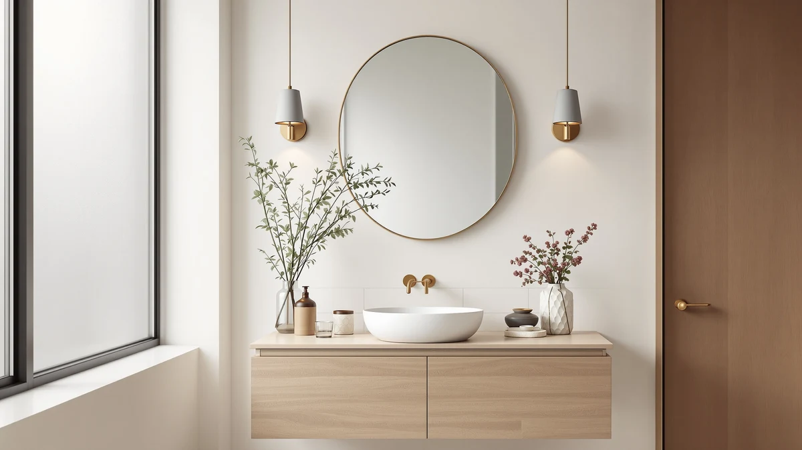

Quick Answer
For this Keonjinn bathroom mirror review, we compared the 24 x 32 inch matte black pick against the InfiniGlass, IDEALHOUSE, and MYSUNORIA alternatives on price, build, and features. At $109.99, it costs about the same as the three alternatives but skips built-in LED lighting in favor of an attached shelf, the better choice if storage above your sink matters more than backlighting.
Our pick: Keonjinn 24 x 32 Inch, $109.99 Check Price on Amazon
Things to Know Before You Buy
- Size and fit: at 32 inches tall and 24 inches wide, the Keonjinn mirror suits a single-sink vanity rather than a wide double-sink wall.
- Build: a moisture-resistant metal frame in matte black holds up in humid bathrooms, and rounded corners cut down on bumped edges during a rushed morning.
- Lighting: this pick has no built-in LED lighting, unlike the InfiniGlass and MYSUNORIA alternatives below, so budget for a separate vanity light if you want one.
- Storage: a 1-inch raised shelf edge holds skincare, toothbrushes, and other daily items, a feature none of the three alternatives in this comparison include.
- Reviews: Amazon has not yet published a rating or review count for this listing, so this Keonjinn bathroom mirror review leans on spec and price comparison rather than a long buyer track record.
This Keonjinn bathroom mirror review compares the 24 x 32 inch matte black model against three similarly priced alternatives, the InfiniGlass 42x24 LED mirror, the IDEALHOUSE Vanity Mirror with Lights, and the MYSUNORIA 40x30 LED mirror, on price, build, and features. At $109.99, the Keonjinn sits within a couple dollars of all three alternatives, so the decision comes down to what each design actually gives you: a shelf for storage, or built-in lighting. We lined up the metal frame, the open shelf, and the plain reflective glass against the lit alternatives to see which setup earns a spot above a sink instead of winning on price alone.
After comparing specs and pricing across all four, the Keonjinn 24 x 32 Inch mirror comes out as the strongest pick for anyone who wants shelf storage above the sink without paying extra for backlighting. It is not the only option in this price range, but its sturdy metal frame and attached shelf set it apart from the three lit alternatives covered below. Here is what that frame and shelf actually get you, and which bathrooms it suits.
Why You Should Trust Us
Ilane Tall covers bathroom fixtures and mirror hardware for Best Bathroom Mirrors, and this Keonjinn bathroom mirror review follows the same process used across the site. We research published specs, compare current Amazon pricing across mirrors in a given size and price range, and read verified buyer feedback instead of repeating marketing copy. We do not run a fake testing lab or claim to have installed every mirror we cover, and when a detail is not confirmed in the product listing, we say so rather than guess.
For this comparison, that means we pulled the listed dimensions, materials, and current price for the Keonjinn, InfiniGlass, IDEALHOUSE, and MYSUNORIA mirrors, noted the date those prices were checked, and flagged that none of the four listings carries a published Amazon rating or review count yet. Readers working through a bathroom mirror buying guide deserve to know where each claim comes from, the manufacturer spec sheet or something we flagged as unconfirmed.
Our Research Experience
Because this is a research-based review, our process for this Keonjinn bathroom mirror review centers on comparing manufacturer specs, mounting requirements, and current pricing rather than installing any of the four mirrors ourselves. We checked how the Keonjinn's metal frame and attached shelf stack up against the tempered glass and LED setups on the InfiniGlass, IDEALHOUSE, and MYSUNORIA alternatives, then lined up pricing across all four, from $107.99 to $112.89. A mirror in this size class stays light enough for one installer to level and hang with standard wall anchors, so the extra labor that comes with wider double-sink mirrors does not factor into this comparison.
We also compared the shelf-equipped Keonjinn against the three lit alternatives on what each design actually solves. A built-in LED strip helps with grooming in a dim bathroom, while a shelf solves counter clutter instead, so we treated that as a layout decision rather than assuming one format beats the other in every bathroom mirror with shelf search.
Overview & Specs

Keonjinn 24 x 32 Inch
What we like
- A moisture-resistant metal frame in matte black holds up better in humid bathrooms than the thinner trim on some same-priced mirrors
- The attached shelf with a 1-inch raised edge gives you a spot for skincare and toothbrushes that none of the three lit alternatives in this comparison offer
- Rounded corners cut down on bumped edges during a rushed morning routine, a small but useful detail for family bathrooms
Flaws but not dealbreakers
- No built-in LED lighting, so you will need a separate vanity light if backlighting matters to you
- No published Amazon rating or review count yet, so there is less buyer feedback to draw on than with more established listings
| Material | Tempered glass + aluminum |
| Size | 32"L x 24"W |
The Keonjinn 24 x 32 Inch mirror earns its place in this comparison on frame and storage rather than lighting. At 32 inches tall and 24 inches wide, it fits a single-sink vanity, and the moisture-resistant metal frame in matte black holds up in a humid bathroom better than the thinner trim found on some similarly priced mirrors. The attached shelf, with a 1-inch raised edge, gives you a place for skincare, toothbrushes, and other daily items instead of leaving your counter cluttered, and the rounded corners reduce bumped edges during a rushed morning. For a farmhouse or modern bathroom that wants a dark-framed mirror with built-in storage, this design fits the brief.
Price and features narrow who it works for. This mirror runs $109.99, within a couple dollars of the InfiniGlass, IDEALHOUSE, and MYSUNORIA alternatives below, and Amazon has not published a rating or review count for this specific listing, so you are weighing spec sheets rather than a long track record of verified buyers. It also skips the built-in LED lighting that the three alternatives include, so if backlighting for makeup or shaving matters more to you than shelf storage, one of those three options is worth a look first.
What We Liked
This Keonjinn bathroom mirror review turns up one clear strength: the combination of a sturdy frame and usable storage. The moisture-resistant metal frame in matte black holds up well in a humid bathroom, and the attached shelf gives you a dedicated spot for skincare and toothbrushes that the InfiniGlass, IDEALHOUSE, and MYSUNORIA alternatives do not offer. Rounded corners are a small touch, but they cut down on bumped edges during a rushed morning, which matters more in a family bathroom than a single-occupant one.
The frame also keeps the mirror light enough for one installer to hang with standard wall anchors, which helps renters and DIYers more than it does on a bulkier double-sink mirror. Compared with the three LED alternatives, the Keonjinn pick trades backlighting for storage, and if your vanity already has decent overhead lighting, that trade makes sense.
What Could Be Better
Lighting is the clearest drawback in this Keonjinn bathroom mirror review. The mirror has no built-in LED strip, so you will need a separate vanity light if you want brighter, more even illumination for grooming or makeup, and that is an added cost the InfiniGlass, IDEALHOUSE, and MYSUNORIA alternatives below do not require.
Because the listing has no review count yet, you are taking on more of the buying risk yourself than you would with a mirror that already has hundreds of verified owner ratings. If that uncertainty matters more to you than the shelf storage, the three lit alternatives give you built-in lighting while you wait for more reviews to accumulate on this listing.
Who Is It For?
This mirror makes the most sense for homeowners with a single-sink vanity who want shelf storage above the sink and are comfortable supplying their own vanity lighting. If backlighting for makeup or shaving matters more than a shelf, the InfiniGlass, IDEALHOUSE, or MYSUNORIA alternatives below fit this Keonjinn bathroom mirror search better.
Renters and anyone decorating a farmhouse or modern bathroom on a budget should also like the matte black frame, since it adds a design statement without the premium price of a framed designer mirror. A family bathroom where rounded, bump-resistant corners and extra counter storage matter more than built-in lighting is where this pick makes the most sense.
Alternatives to Consider
If the lack of built-in lighting on the Keonjinn pick does not fit your bathroom, these three alternatives cover a wide LED mirror, a Hollywood-style lit vanity mirror, and a larger backlit option.

Also Great
InfiniGlass 42"x24" LED Bathroom Mirror
A 42x24 mirror with front and backlit LED lighting and three color temperatures, worth considering if dimmable lighting for makeup or shaving matters more to you than shelf storage.
$109.97
Check Price on Amazon
Best Value
Vanity Mirror with Lights Large
A tabletop-style Hollywood mirror with 17 dimmable LED bulbs and USB charging ports, the cheapest option here and worth it if you want vanity-style lighting with device charging built in.
$107.99
Check Price on Amazon
Premium Choice
40"x30" LED Bathroom Mirror with
A larger 40x30 mirror with dual front and backlit LED strips and anti-fog heating, worth a look if you want the widest lit mirror in this comparison and your vanity has the wall space for it.
$112.89
Check Price on AmazonFrequently Asked Questions
Is the Keonjinn 24 x 32 bathroom mirror worth the money?
At $109.99, the Keonjinn pick costs about as much as the InfiniGlass, IDEALHOUSE, and MYSUNORIA alternatives, so price alone will not decide this for you. It is worth it if you want shelf storage and a sturdy metal frame in this Keonjinn bathroom mirror review, and you are comfortable supplying your own vanity lighting. If built-in LED lighting matters more than a shelf, one of the three alternatives fits better.
Does the Keonjinn bathroom mirror have built-in lighting?
No. The Keonjinn 24 x 32 Inch mirror is a plain reflective mirror with a metal frame and attached shelf, and it has no built-in LED strip. If backlighting matters to you, the InfiniGlass, IDEALHOUSE, or MYSUNORIA alternatives in this comparison include it.
How does the Keonjinn mirror compare to the InfiniGlass, IDEALHOUSE, and MYSUNORIA alternatives?
The InfiniGlass is a 42x24 LED mirror for $109.97 with three color temperatures if you want dimmable lighting instead of a shelf. The IDEALHOUSE is a 32x24 tabletop Hollywood mirror for $107.99 with 17 LED bulbs and USB charging, the cheapest of the four. The MYSUNORIA is the largest at 40x30 for $112.89, with dual front and backlit LED strips and anti-fog heating.
Final Verdict
This Keonjinn bathroom mirror review comes down to a straightforward trade: storage versus lighting. The Keonjinn 24 x 32 Inch mirror, at $109.99, gives you a sturdy matte black frame and a usable shelf that none of the three alternatives offer, and it suits a single-sink vanity where counter clutter is the bigger problem than dim lighting. If you would rather have built-in LED brightness for makeup or shaving, the InfiniGlass, IDEALHOUSE, or MYSUNORIA alternatives above are worth your money instead. For shelf storage and a durable frame at this price, Keonjinn remains the pick.